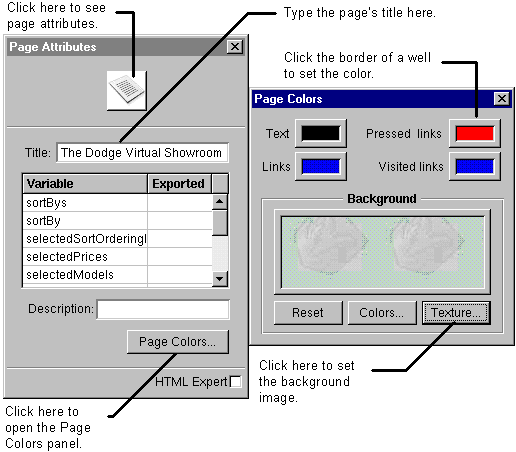

Table of Contents
Table of Contents
 Previous Section
Previous Section
Table of Contents
Previous Section
Select any element in the page.
In the inspector window, click the leftmost icon. (Click the inspector button to display the inspector window.)

"Setting Colors" describes how to use the Colors panel that opens when you click a color well border.
You use the table on the page inspector only if you're creating a component that can be reused. See "Creating Reusable Components" for more information.
 Next Section
Next Section